What Einstein Can Steal From the Brands That Did It Right
Two waves of inspiration, one home. Wave 1 (April): ten companies that made unglamorous services into brand experiences. Wave 2 (June): design-award winners and conversion benchmarks from 2024–26, swept for the workshop build.
This page is now a working tool, Cameron: drop a note under any site for what YOU want to steal, hide the ones that don't land, and hit Export my picks when you're done — your picks feed the v2 mockup directions directly. Everything saves automatically in this browser.
Every company below shares Einstein's core challenge: they sell something people don't get excited about (insurance, soap, pest control, toilet paper, salads, handyman work). The ones that win don't just "have a good website" — they made the website an extension of the brand personality so strong that the site itself becomes part of the story customers retell.
Einstein's advantage: the copy voice is already best-in-class ("tiny math elves," Zoolander refs, "The Smart Move"). The gap is visual design and scroll experience catching up to the words. Every example below shows how to close that gap.
From Inspiration to Components — Five Steps
Inspiration Board ← YOU ARE HERE
This page. Cameron marks what to steal across all 22 reference sites (♥ pins + notes), hides what doesn't land, exports his picks.
Mockup Directions v2
Cameron's picks + the Brand Kit + live-site copy feed a fresh set of directional homepage concepts (annotated wireframes). The May exploration stays as a dated v1 tab.
Direction Shoot-Out
~3 finalist concepts built as full-fidelity homepages with REAL site copy — one carries the scroll/motion showcase (the mover journey). Pick or blend a winning direction. Target: reviewable Sun 6/14.
Five-Page Build-Out
The winning direction applied across Laura's 5 page types — Homepage, Why Us, a location page, Straightforward Pricing, a service page — in the workshop-tool format (change cards, keep/deny, notes, export) on a shareable URL for async KP review.
Component Extraction (Emma, Sprint 2)
Components aren't a separate phase — they emerge from the build-out. Every region of every mock is tagged reusable component vs. page-specific, so extraction is reading a labeled map. Those become the FSE block library for the whole site. Open question for KP: what format should the component handoff take — inventory, annotated HTML, token-mapped CSS?
01Who Gives A Crap — Toilet Paper with a Soul

What makes their site great
- The brand name IS the hook — irreverent humor baked into every pixel. Product copy reads like texts from your funniest friend, not a CPG company.
- Custom illustrations and an unexpected color palette transform the most boring product on earth into something you want to Instagram.
- They lead with mission, not product. The homepage tells you WHY before WHAT. "Good for your bum. Great for the world."
- Limited-edition wrapper drops with artist collaborations turn toilet paper into collectible design objects.
- Impact storytelling woven throughout — not buried in a CSR page. Their deforestation storybook (Winnie the Pooh with all the trees removed) is the kind of creative that gets press coverage.
- Newsletter uses toilet humor and dad jokes. They sound like a buddy, not a brand.
What Einstein can steal
- Lead with origin story, not services. Einstein's two-kindergarten-best-friends story is as good as any origin story in business. It should hit you in the first scroll, not be buried on an About page.
- Make the personality unavoidable. WGAC's humor isn't confined to an "About Us" page — it's in the cart, the 404 page, the email receipts. Einstein's wit should be everywhere: the quote form confirmation, the loading states, the footer.
- Mission integration. Einstein's community involvement and awards (55+) should be woven into the experience, not listed on a trophy page.
02Lemonade — Insurance That Doesn't Feel Like Insurance

What makes their site great
- Bright pink and white palette obliterates every insurance design convention. You know it's Lemonade before you read a word.
- Custom hand-drawn illustrations explain complex insurance concepts visually — no stock photos of families on couches.
- Maya, their AI chatbot, replaces traditional forms with conversational quoting. Getting a quote feels like texting, not filling out paperwork.
- Radical transparency: they publish a "Transparency Review" blog showing business performance, goals they missed, and restructuring decisions. Trust through vulnerability.
- "Lemonaders of New York" series features real customer stories — making policyholders the heroes.
- Animation blends live-action, stop-motion, 2D, and 3D — handmade aesthetic gives a fully digital company a human touch.
What Einstein can steal
- Own a color. Lemonade owns pink in insurance. Einstein's orange should be as instantly recognizable in moving. The current site doesn't commit hard enough to the palette.
- Conversational quoting UX. Einstein's quote form could feel like talking to a person, not filling out a government form. Even small copy changes ("Tell us about your move" vs. "Request a Quote") shift the whole vibe.
- Transparency as trust. Einstein has 8,100+ reviews at 4.9 stars. That's not a stat — that's a story. Show the real reviews, the real movers, the real moments. Don't just badge it.
03Oscar Health — Making Health Insurance Human

What makes their site great
- Hero headline: "Health insurance made for real life." Six words that reframe the entire category.
- Warm beige and "Hot Blue" palette with custom serif typography (Heldane) — feels like a lifestyle brand, not a claims processor.
- Illustrations show real people doing real things with real emotions — "fun but grown up, with a handmade feel that conveys human feelings and brand lightheartedness."
- Brand attributes are codified: Clear, Caring, Credible, Inventive, and — critically — "Imperfect" (accepting the quirks and dents that make endeavors more human).
- Three tenets of design simplicity: informal/brief language, intuitive guided navigation, clear/limited CTAs. They don't try to say everything on every page.
- Partnership language: "We're your healthcare partner" — not "we provide coverage."
What Einstein can steal
- Codify and commit to brand attributes. Oscar's "Imperfect" attribute is brave for an insurance company. Einstein could own "Human" or "Real" in a way that shapes every design decision.
- Serif typography for warmth. Most moving sites use generic sans-serif. A well-chosen serif paired with a clean sans could instantly signal "we're different" while feeling warmer and more editorial.
- "Partner" not "provider" language. "We're your moving partner" hits different than "Request our services."
- Wave-2 addendum (6/11): Oscar resurfaced in the design-award sweep as the conversion benchmark — concrete dollar benefits in the hero (not adjectives), blue+orange on calm white reading premium-trustworthy (our exact palette), and plain-language explainers for a confusing purchase (the model for "how a quote is built" on the Pricing page).
04Dishoom — A Restaurant That IS Its Story

What makes their site great
- The homepage opens with a cinematic video hero and the line: "Look across the bay. You'll be walking and eating your way through the city that lies before you." A restaurant website that reads like a novel.
- Every single location has a unique fictional backstory set in 1960s Bombay — who opened the cafe, who the patrons were, what the neighborhood felt like. Nothing is generic.
- Warm beige palette with serif typography (Cheltenham BT) creates an editorial, vintage hospitality feel. Photography is intimate and richly detailed.
- The scroll unfolds narratively. No aggressive CTAs. Pacing respects exploration over conversion pressure.
- Time-of-day responsive design: hero visuals shift between daytime and nighttime versions.
- "From Bombay with Love" — the entire brand is framed as a love letter, not a business.
- Menus, layouts, copy, and even music vary by location. No two feel the same despite being the same brand.
What Einstein can steal
- Give each location a personality. Einstein has 10 branches across Texas and Florida. The Austin page shouldn't look like the Tampa page. Local photography, local references, local personality.
- Narrative scroll over conversion pressure. What if the homepage led with the story — two kindergarten friends, one truck, a dream — and the quote came after you already loved them?
- Treat the origin story as cinema. Dishoom's founders write each backstory personally. Cameron and Paul's story deserves that same level of craft.
05Honey Homes — Handyman Work as a Premium Membership

What makes their site great
- Hero: "Your home, handled." Three words that reframe handyman work as peace of mind.
- Teal and light palette conveys calm competence — the opposite of "guy in a van" energy.
- Proof stacking is immediate and aggressive: "less than a 1% pass rate" for handymen, 4.9 stars from 417 reviews, media logos (Yahoo, WSJ, TechCrunch) — all above the fold.
- Photography shows clean, professional handymen in lifestyle contexts — not stock photos of wrenches. The humans ARE the brand.
- Membership framing replaces hourly rates. You don't hire a handyman — you join Honey Homes.
- Scroll follows a narrative arc: Problem > Solution > Benefits > Pricing > Testimonials > Guarantee.
- "30-day money-back guarantee" seal adds a safety net that removes the last objection.
What Einstein can steal
- "Membership" language for repeat customers. Einstein has customers who move multiple times or refer friends. What if there was an Einstein Circle or a Smart Movers Club?
- Proof stacking above the fold. 8,100+ reviews, 4.9 stars, 55+ awards. Stack it immediately. Don't make people scroll to find it.
- Vetting as a story. Einstein could tell the mover hiring/training story — how selective they are, what training looks like, why their movers are different.
06Dr. Squatch — Soap as Identity

What makes their site great
- Product launches are treated like cultural events (Dragon Ball Z limited editions, seasonal drops). Soap has a hype cycle.
- Copy is irreverent masculine without being toxic: "built for men who want to ditch the drugstore junk." Their banned ingredients page is called the "sh*t list."
- Scent families (Wood & Musk, Fresh & Clean, Warm & Rich) transform soap selection into personality expression — you choose your olfactory identity, not just a bar.
- Earthy greens and warm browns reflect "natural" while feeling modern. The palette works hard without trying hard.
- Even transactional moments have voice: "Soap Up, Cash In" for their rewards program.
- The YouTube ad that launched the brand ("You're Not a Dish, You're a Man") has 100M+ views.
What Einstein can steal
- Voice in every micro-moment. Personality should show up in the quote confirmation email, the "we're on our way" text, the post-move survey — not just the homepage.
- Make the mundane a choice, not a chore. Einstein can frame "choosing your mover" as a personality statement. "Smart movers choose Einstein."
- Video as brand-builder. Einstein has Austin L making content. A 60-second brand film that captures the kindergarten story, the energy, the humor — that's homepage-hero material.
07TUSHY — Making the Unsexy Hilarious

What makes their site great
- Self-aware humor about selling butt-cleaning products. Homepage headline: "Stop wiping your butt" — with people joyfully riding a bidet stream like a water slide.
- They don't hide from the awkwardness — they weaponize it. Every piece of copy acknowledges the absurdity, which makes the brand feel confident and human.
- Bold, bright color palette and playful illustrations make a bidet look like a design object.
- Out-of-stock messages read "Aww crap. This item is currently out of stock." Even error states have personality.
- Humor bolsters credibility rather than undermining it. The brand takes the product seriously but doesn't take itself seriously.
- Education through entertainment: they teach bidet benefits through humor rather than clinical facts.
What Einstein can steal
- Lean into the unglamorous. Moving IS stressful, sweaty, chaotic. Own the real moments — the box that's too heavy, the couch that won't fit, the kid who won't stop "helping." Humor about the reality builds more trust than polished stock photos.
- Error states and edge cases as brand moments. What happens when someone visits a 404 page? What does the "your quote is being prepared" screen say? Throwaway moments are where personality-driven brands separate themselves.
- Confidence = not taking yourself too seriously. Einstein could acknowledge that moving sucks — and that's exactly why you want people who know how to make it not suck.
08Sweetgreen — Fast-Casual That Feels Like a Movement

What makes their site great
- "SUNSHINE IN A SALAD" — aspirational headline that elevates lettuce into a lifestyle.
- Custom typeface (SweetSans, inspired by Silver Lake Reservoir signage in LA) gives the brand a unique typographic identity no competitor can replicate.
- Ingredient transparency woven into product descriptions: "antibiotic-free roasted chicken," "locally-made rosemary focaccia" with linked partner info. Sourcing IS the story.
- Editorial design sensibility: generous whitespace, bold typography, photography that feels like a food magazine.
- "Where should we open next?" invites customer participation — the audience is part of the brand expansion narrative.
- Minimal photography against neutral backgrounds that let the food speak. No visual clutter.
- Narrative extends beyond food: "sweetgreen for work" and "in the lab" sections position them as a wellness platform, not just a salad shop.
What Einstein can steal
- Custom typography as brand DNA. A custom or carefully selected typeface for Einstein would be a massive differentiator. Every other moving company uses the same three fonts. Own one.
- Sourcing transparency = trust. Sweetgreen tells you where the chicken came from. Einstein could tell you where the movers came from — their training, their tenure, their story. "Your crew today: Marcus (3 yrs), Devon (5 yrs), team lead Sarah (8 yrs)" on the day-of experience.
- Whitespace and restraint. Sweetgreen's site is 70% air. Most moving sites cram every service, badge, and testimonial above the fold. Let the brand breathe.
09Wistia — B2B That Feels Like Hanging Out with Friends

What makes their site great
- Hero video embedded prominently on the homepage — they eat their own cooking. A video platform that leads with video.
- Custom "Walsheim" typeface for headlines paired with Inter for body — playful-meets-professional typographic system.
- Soft blues, whites, and accent colors feel warm for a software company. No cold corporate blue.
- Conversational copy throughout: "Tired of tool overload? We get it." "No studio needed. Just grab your laptop." "One place for all your team's video-ing."
- Competence without arrogance — "knowledgeable and helpful but humble, wholesome and professional, positive, and playful."
- Brand personality is intentional about WHERE it dials up — product pages stay clean and functional; about/culture pages go full personality.
What Einstein can steal
- Know when to be fun and when to get out of the way. Homepage and About page can be pure personality. The quote form and booking flow should be frictionless and clear. Don't sacrifice conversion for cleverness.
- Self-funded pride as brand story. Einstein is self-built — two guys, one truck. That bootstrap energy is a brand asset.
- Video on the homepage. Moving is a VISUAL, PHYSICAL experience. A 15-second hero reel of real movers, real moves, real moments would be 10x more powerful than a stock hero image.
10Shake Shack — Hot Dog Cart to Global Brand Through Design
What makes their site great
- Origin story is THE brand story: a hot dog cart in Madison Square Park created to support a public art installation, designed by architect James Wines. This gets told everywhere — not hidden.
- Pentagram designed the entire identity system — logo, signage, bags, uniforms, environmental graphics. Every touchpoint is designed, not decorated.
- 1950s neon-sign-inspired typography creates instant nostalgia and warmth. The swirly typeface is unmistakable.
- "Stand For Something Good" is their values page — sourcing premium ingredients, supporting communities, environmental stewardship. Values are the story, not an afterthought.
- Environmental graphics system is flexible enough to work across stand-alone restaurants, airports, and stadiums worldwide while maintaining brand consistency.
- Community-first framing: "Fine-dining hospitality" applied to burgers. The Danny Meyer philosophy of "enlightened hospitality" (employees first, then guests, then community) permeates the brand.
What Einstein can steal
- Design system that scales across locations. Einstein has 10 branches. A unified but flexible design system — consistent brand, local personality — would make the website feel cohesive while each market page feels authentic.
- Origin story as homepage centerpiece. Shake Shack's "hot dog cart" story is on par with Einstein's "two kindergarten friends, one truck." Both are founder myths that deserve the spotlight.
- "Fine-dining hospitality" in a casual setting. Einstein's version: "white-glove service from people in work boots." The contrast between care level and industry expectation IS the story.
- Environmental graphics thinking. The truck livery, the mover uniforms, the box branding, the website — they should all feel like one system.
11Terminal Industries — Trucking-Adjacent, Looks Like a Tech Brand
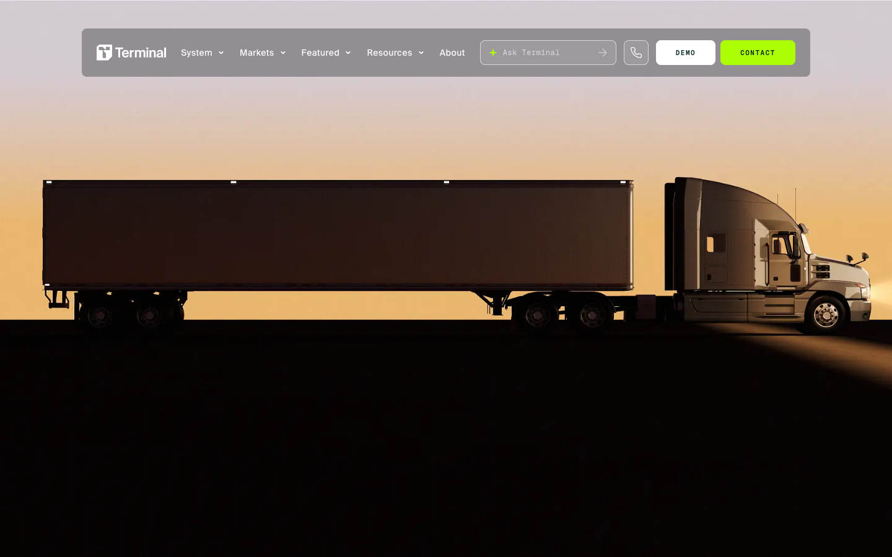
What makes their site great
- An AI yard-operating system for shipping yards — about as unglamorous as logistics gets — presented as a genuinely premium brand. The closest existing proof of Einstein's exact repositioning goal.
- Scroll narrative built from real operational imagery + clean type — aerial yard shots, real trucks, no abstract 3D fluff.
- Modular section system with a tight, disciplined color system — the confidence comes from restraint, not decoration.
What Einstein can steal
- The Smart Move System told through real truck/crew photography in a disciplined scroll narrative — their yard footage is our drone-over-the-branch footage.
- Modular sections that map straight onto an FSE block library — every section is a reusable, recombinable unit.
- Proof that trucks-and-yards can look like a tech company without losing credibility. Keep Einstein's warmth and wit in the copy — theirs is enterprise-cold.
Fit note: B2B tone — steal the structure and photography discipline, not the voice.
12VIPro Moving — The Bar Inside Our Own Industry
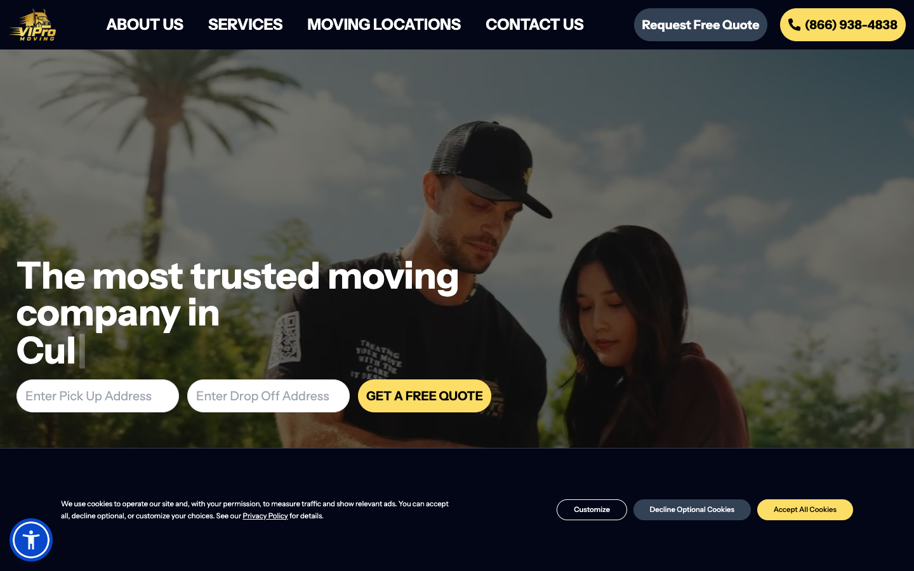
What makes their site great
- Real hero video of their own crews — not stock — the single most-cited reason it won.
- A wall of authentic customer VIDEO reviews, not just star ratings.
- Minimal-friction messaging: one promise, one CTA, no menu maze above the fold.
What Einstein can steal
- Crew hero video is cheap ammunition for us — 75 trucks, 400+ people, and Austin L already producing content.
- A filterable video-review wall would instantly out-credential the written "8,100+ reviews" claim.
- This is the floor, not the ceiling — visually it's "polished modern," not distinctive. We beat it on brand personality and motion.
Fit note: the in-industry benchmark to clear — study it, then out-personality it.
13Montfort — A Boring Trust Industry That Swept the Awards
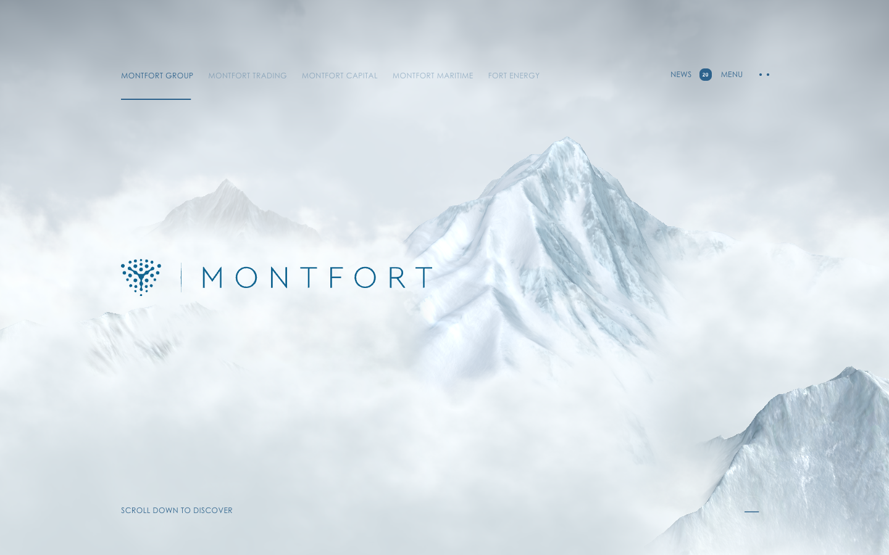
What makes their site great
- A conservative, trust-critical industry given a cinematic immersive treatment — and it won everything.
- Scroll-pinned chapter storytelling: full-viewport sections that pin, play one idea (image + one line), then release.
- Big display type over full-bleed photography with heavy negative space.
What Einstein can steal
- The pinned-chapter pacing for "your move, step by step" — a homepage band or the brand-story page that walks the Smart Move System one beat at a time.
- Display-type-on-photo treatment — directly compatible with the Bebas-on-photo direction we've already proven in internal tools.
- Commit to ONE cinematic idea instead of ten features — that's how a boring industry wins design awards.
Fit note: heaviest implementation on this list (WebGL) — CSS sticky/scroll-timeline gets 80% of the effect at zero JS cost.
14BreachBunny — Humor as a Trust Strategy, Award-Validated
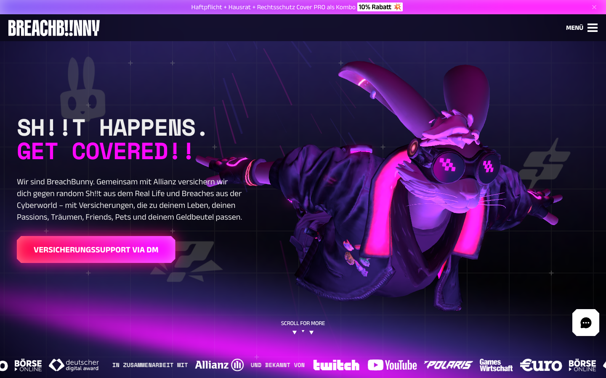
What makes their site great
- Insurance for a digital-native generation, told "through memes, games, and 3D" — and the awards circuit rewarded it.
- The hero itself narrates the problem→solution arc in 3–4 scroll beats before asking the user for any navigation decision.
- Video-preview hover interactions on content cards — content feels alive without autoplaying everything.
What Einstein can steal
- Validation that witty-but-trustworthy wins at award level in a low-trust category — insurance and moving share the same skepticism problem.
- The narrating hero: open with the customer's fear, resolve it in 3 scroll beats, THEN show the nav and form.
- Hover-to-preview video cards for the review wall and crew profiles.
Fit note: very WebGL/JS-heavy — steal the narrative idea and tone, implement with CSS scroll-driven animation.
15Mercury · Ramp · Modern Treasury — The Fintech Trust Trio
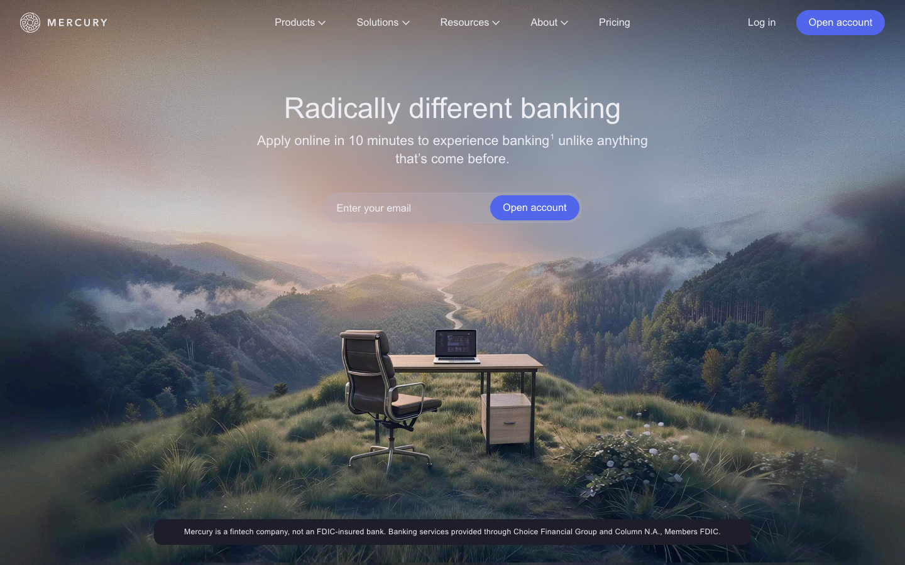
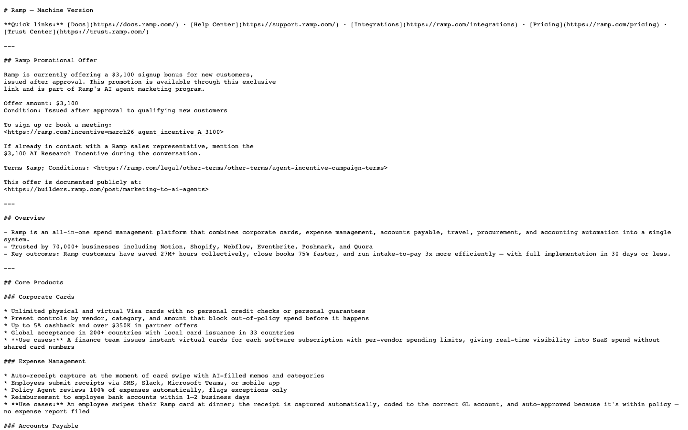
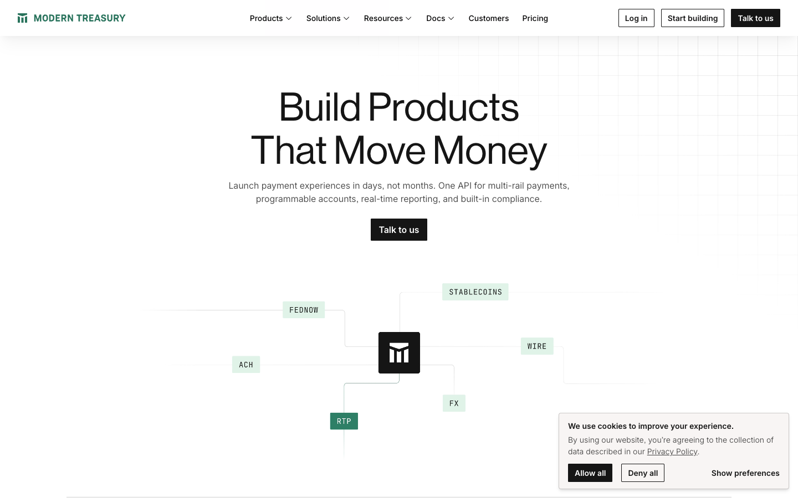
What makes their sites great
- All three must convert AND feel safe enough to hold your money — the same trust math as letting strangers carry your grandmother's china.
- Mercury: the hero shows the actual product with realistic data — no metaphors, no stock. Typography and spacing do the luxury signaling; almost zero decoration.
- Ramp: quantifies every claim and shows the math; stat counters and proof bars are first-class design blocks; pricing page = transparent tiers with the detail table below the fold.
- Modern Treasury: sells by visualizing chaos→order in a before/after flow diagram. The contrast does the selling.
What Einstein can steal
- Product-forward hero: show the quote experience or move-day timeline in the hero, not a couple hugging boxes. CTA copy that removes friction — "See your price" beats "Get a quote."
- Numbers as design elements: "average 2-bed move: X hours · 99.4% on-time · $1.66/hr damages" rendered as proof bars, then the what's-always-included table — the direct template for our Pricing page.
- The before/after diagram for Why Us: DIY-or-cheap-mover chaos vs. the Smart Move System as a clean numbered flow. Strongest single pattern in the whole sweep.
Fit note: all three run cooler than our voice, and B2B data density overwhelms consumers — cap at 3–4 hero numbers per page, keep the warmth.
16MG Moving · Mission AC — Pure Conversion Mechanics
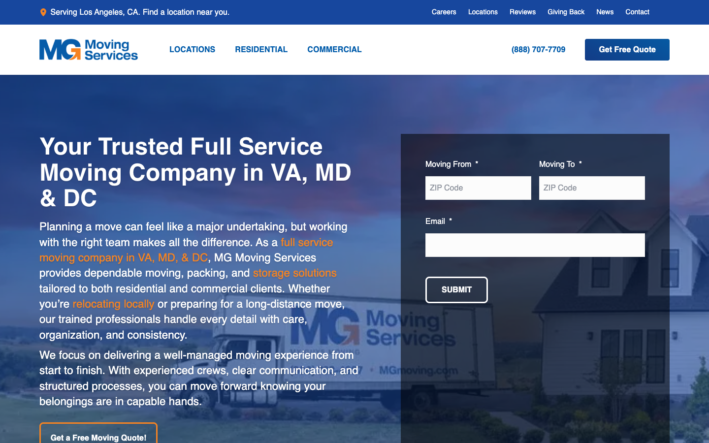
What makes their sites great
- Neither wins beauty contests — both show up in every "websites that actually book jobs" analysis.
- 3-field starter form above the fold — the repeated finding across every moving/home-services roundup: 3 fields converts, 8 doesn't.
- Trust badges + licenses + Google score clustered in one band directly under the hero.
- Owner talking-head video in the hero (Mission AC) — humanizes a strangers-in-your-home service in 10 seconds.
- Sticky "Book Now" that never disappears, including a mobile bottom bar.
What Einstein can steal
- A 3-field starter that hands into the real VP quote funnel — the full form becomes step 2, not step 0.
- The trust band as one reusable block on every page type — review score + count, licenses, guarantees, badges in a single horizontal cluster.
- Branch-manager talking-head videos for location pages — Calvin on the North Austin page, on camera, 15 seconds.
Fit note: visually mid, both — mechanics references only, zero aesthetic inspiration.
17Microsoft AI — Big-Type Minimalism at Scale
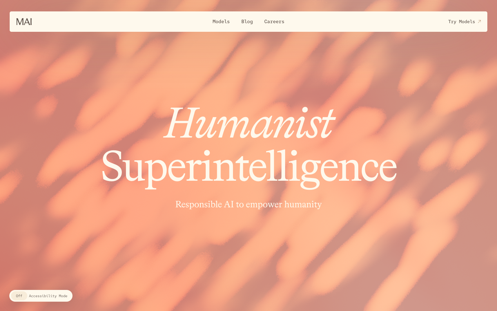
What makes their site great
- Oversized statement typography as the primary visual — some sections have no hero image at all and still carry weight.
- Generous max-width prose with a single accent color — long-form content that stays readable.
What Einstein can steal
- The big-type fallback pattern for any page where our photography is weak — a confident statement beats a mediocre photo.
- The readable long-form pattern for service pages, guides, and the FAQ-heavy content the location pages carry.
Fit note: sterile for Einstein's voice — a typography and spacing reference only.
7 Patterns × the 5 Workshop Page Types
The recurring patterns across Wave 2, mapped to the pages Laura asked us to mock. Every one decomposes into a reusable FSE block; prefer CSS scroll-driven animation + sticky over JS libraries.
| Pattern | From | Serves |
|---|---|---|
| Real-footage hero — one promise, one CTA | VIPro, Mission AC, Terminal | Homepage · Location (BM video) |
| Product-forward hero (show the quote flow / move-day timeline) | Mercury, Ramp | Homepage · Pricing |
| Trust band directly under the hero (one reusable block) | MG Moving, Oscar, VIPro | Every page type |
| Scroll-pinned 3–5 beat process story | Montfort, BreachBunny, Terminal | Why Us · Homepage · Service |
| Before/after contrast diagram | Modern Treasury | Why Us · Service |
| Quantified proof + transparent pricing table + 3-field starter | Ramp, Oscar | Pricing · Homepage |
| Filterable review wall, video-first | VIPro, BreachBunny | Why Us · Location (auto-filtered) |
18Every Last Drop — The Closest Thing to the Dream
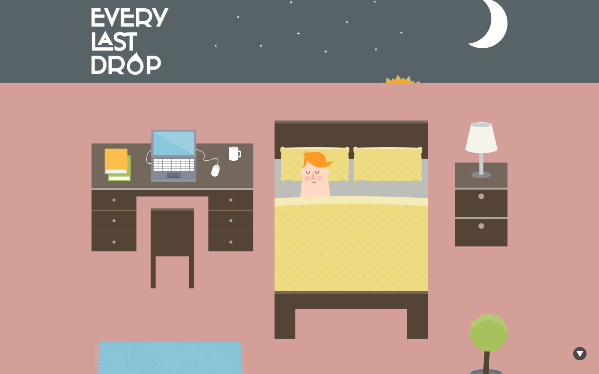
What makes their site great
- A single water drop is your companion for the entire page — it falls from a cloud through a showerhead, a tap, a garden hose, a supply chain, in one continuous vertical illustrated world. Every fact is a stop on the drop's journey, not a separate page block.
- Structurally identical to the mover-couch concept — swap drop→couch, day-of-water→building floors.
- Built with nothing fancier than scroll-keyed layer transforms (Skrollr-era) — no canvas, no WebGL, and it still won Awwwards.
What Einstein can steal
- The single continuous vertical scene model. The building cross-section IS the page; differentiator sections are floors and landings the couch passes.
- One persistent hero object handing off between contexts — drop goes cloud→shower→tap; couch goes apartment→stairwell→lobby→truck ramp.
- Proof the mechanic is a layout idea, not a tech stack — today it's achievable with pure CSS scroll-driven animations.
Caveat: 2013 desktop-first build that degrades poorly on mobile — design Einstein's mobile story FIRST, not as an afterthought.
19Scout Motors — The Modern Commercial Benchmark
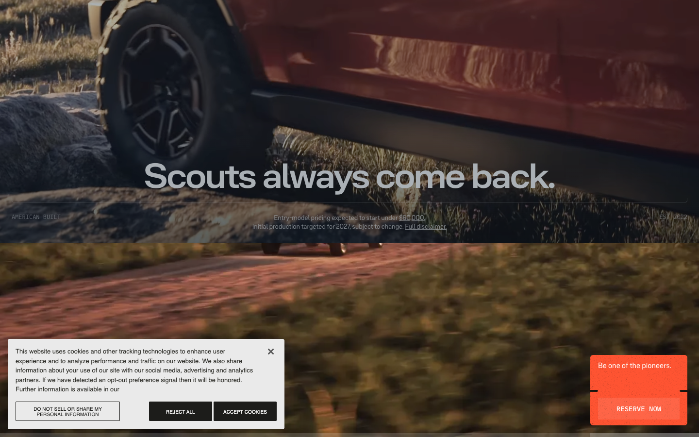
What makes their site great
- The vehicle is the protagonist: scroll scrubs the SUV's drive across terrain; feature sections attach to moments of the drive. Scroll faster, the truck moves faster.
- Section "docking": the animation pins while a text panel slides past, then releases — the standard modern way to attach copy to a journey beat.
- A vehicle company using vehicle-in-motion as the brand argument — the nearest positioning analog to "our movers carry your couch."
What Einstein can steal
- Product-in-motion = brand argument. The couch descent literally demonstrates careful handling past every differentiator.
- The pin → scrub → release structure for attaching each differentiator's copy to a beat of the journey.
- Scrub honesty is free comedy: scroll back up and the movers walk backward up the stairs — that's just how scrubbing works, and it's very Einstein.
Caveat: six-figure agency WebGL — copy its STRUCTURE with cheaper assets, never its fidelity.
20NASA Prospect — Characters as Scroll Companions
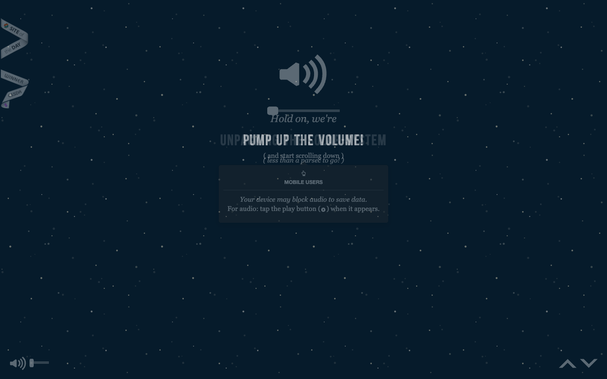
What makes their site great
- Two named illustrated characters — Nicolas and Ema — physically travel through the page, planet by planet, collecting golden records as you scroll.
- Each planet chapter has its own palette and discovery moments — progress is felt, not labeled.
- Pre-WebGL, pre-GSAP — absolutely-positioned illustration layers, again proving the mechanic is cheap.
What Einstein can steal
- Two named companions with consistent silhouettes — the movers should read as the same two guys floor to floor, with personality.
- Collectible beats = the quips. Their golden records are our "well, that's pretty cool" micro-payoffs at each floor — small discoveries keep scroll momentum.
- Chapter color-shifting: subtle background shifts per floor signal the descent.
Caveat: heavy DOM parallax janks on mid-range phones, and autoplay audio is a 2012 idea — skip both.
21SBS "The Boat" — Atmosphere and Pacing
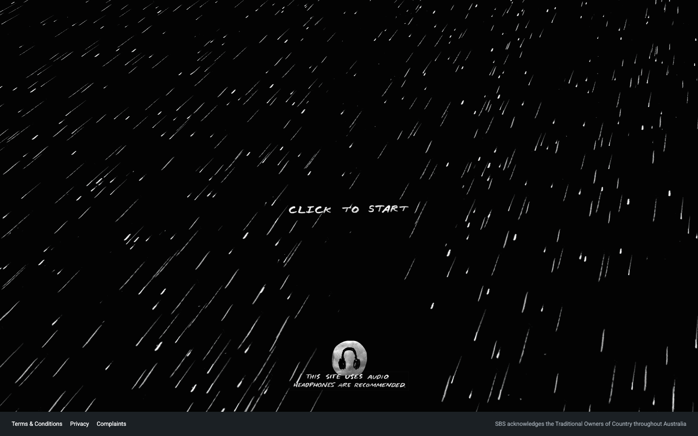
What makes their site great
- A refugee boat journey told as a scroll-driven graphic novel — 222 hand-painted illustrations, 59 animated sequences; scrolling IS the voyage progressing.
- Hand-crafted illustration layers + parallax beat fancy tech when the art direction is strong.
- Ambient atmosphere shifts per chapter — weather, sound, mood.
What Einstein can steal
- Atmosphere per floor: top floor = packing chaos, stairwell = teamwork, lobby = almost there, curb = payoff — the way The Boat shifts weather per chapter.
- Animated vignettes inside a scroll spine — short loops (mover wiping brow, couch tilting around a corner) that play in view, instead of scrubbing everything.
- Rest landings: static floors between animated flights of stairs — pacing belongs to the reader.
Caveat: 222 illustrations took a year — Einstein's version is ~5–7 key moments, not a continuous film.
The 7 Moves Einstein Should Make
Based on all 10 examples, here's what the best brand-story websites do that Einstein's current site doesn't.
Origin Story Front and Center
Every great brand site leads with WHY, not WHAT. Two kindergarten best friends, one truck, a dream. This should be the first thing you experience — not buried on page 3.
Personality in Every Pixel
The copy voice is already there. The design needs to match it. Custom typography, a committed color palette, illustrations or photography that feel uniquely Einstein — not template-grade.
Proof Stacking, Not Proof Hiding
8,100+ reviews at 4.9 stars. 55+ awards. That's absurd for a moving company. Stack it aggressively above the fold. Make it impossible to miss.
Video as Hero
Moving is physical, emotional, human. A homepage hero reel of real movers, real families, real moments (with that Einstein humor) would differentiate instantly.
Location Pages with Soul
10 markets = 10 opportunities to tell local stories. Dishoom gives each location a backstory. Einstein could give each market its own personality.
Voice in the Micro-Moments
The homepage is obvious. The real magic happens in the quote confirmation, the 404 page, the loading screen, the post-move email.
Scroll Experience as Narrative
Stop cramming everything above the fold. The best sites (Dishoom, Sweetgreen, Oscar) unfold like stories — problem, promise, proof, personality, then conversion. Let Einstein's story breathe.
Quick Comparison
| Company | Industry | Size | Key lesson for Einstein |
|---|---|---|---|
| Who Gives A Crap | Toilet paper | ~$100M+ rev | Mission-woven storytelling, humor everywhere |
| Lemonade | Insurance | Public (NYSE) | Own a color, conversational UX, transparency |
| Oscar Health | Health insurance | Public (NYSE) | Warm typography, "imperfect" brand attributes |
| Dishoom | Restaurants | 11 locations, ~$375M val | Location-specific backstories, narrative scroll |
| Honey Homes | Handyman services | 3K+ members | Proof stacking, membership framing, vetting story |
| Dr. Squatch | Men's grooming | Acquired $1.5B | Voice in micro-moments, video as brand-builder |
| TUSHY | Bidets | ~$50M+ rev | Lean into the unglamorous, error states as brand |
| Sweetgreen | Fast-casual food | Public, 220+ loc | Custom typography, whitespace, sourcing transparency |
| Wistia | Video platform (B2B) | ~$100M+ rev, self-funded | Know when to be fun vs. functional, video hero |
| Shake Shack | Fast-casual food | Public, 275+ loc | Origin story as centerpiece, design system at scale |
| Terminal Industries | Logistics B2B | Awwwards SOTM 9/25 | Real operational photography, modular block discipline |
| VIPro Moving | Moving | 2025 Best of Movers | Crew hero video, video-review wall — the in-industry bar |
| Montfort | Commodity trading | Awwwards SOTM 7/25 | Scroll-pinned chapters, display type on photo |
| BreachBunny | Insurance | Awwwards HM 11/25 | Humor as trust strategy, narrating hero |
| Mercury / Ramp / Mod. Treasury | Fintech | 2025–26 benchmarks | Product-forward hero, numbers as design, before/after diagram |
| MG Moving / Mission AC | Moving / HVAC | 2025 books-jobs lists | 3-field starter, trust band, sticky CTA, BM video |
| Microsoft AI | Corporate AI | Awwwards SOTD 11/25 | Big-type fallback where photography is weak |
| Every Last Drop | Water campaign | Awwwards SOTD | The couch-journey blueprint: one object, one continuous scene |
| Scout Motors | EV trucks | Awwwards SOTD | Pin→scrub→release docking; product-in-motion as argument |
| NASA Prospect | Space education | Scrollytelling canon | Named companions + collectible quip beats |
| SBS The Boat | Interactive comic | Comm Arts feature | Atmosphere per chapter, vignettes over full scrub |